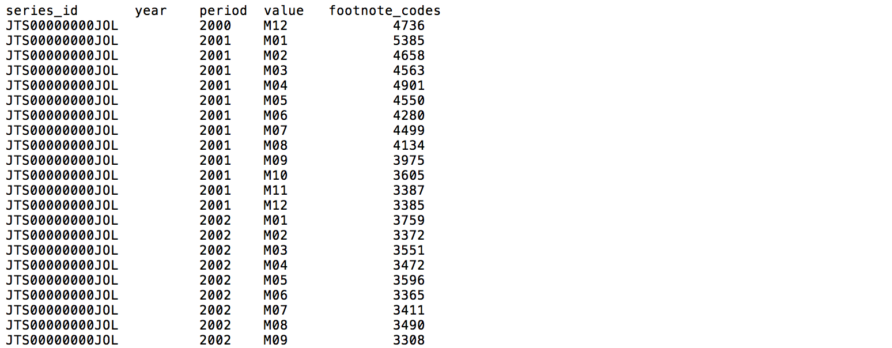
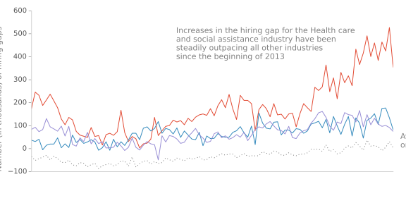
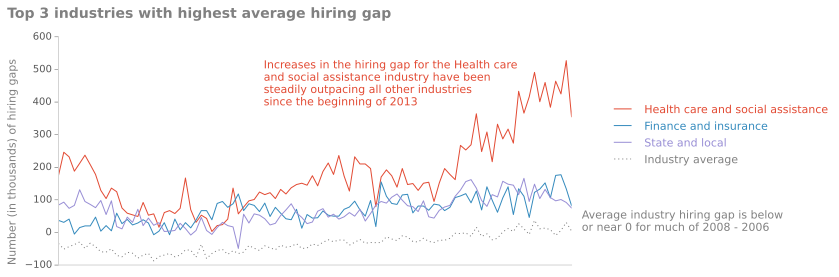
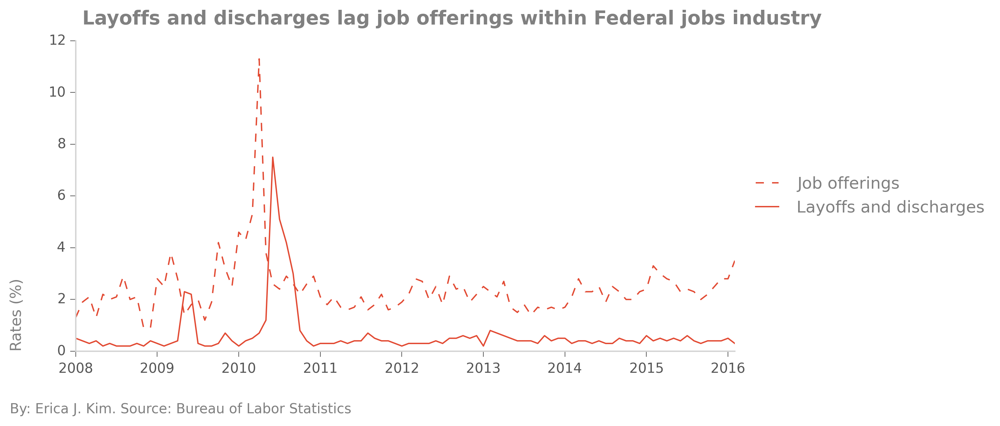

<div class="blurb">
<h2>Working with data from the Bureau of Labor Statistics, part 2</h2>
<h3>Job Openings and Labor Turnover Survey, or how to work with coded survey files (in progress)</h3>
<a href="/projects/bls.html">CLICK here to see part 1 of Working with data from the Bureau of Labor Statistics</a><br><br>


<br><br>
to here?<br><br>
<!--<br><br>-->
<br><br>
<br><br>
<!--
<script type='text/javascript' src='https://public.tableau.com/javascripts/api/viz_v1.js'></script><div class='tableauPlaceholder' style='width: 654px; height: 742px;'><noscript><a href='http:&#47;&#47;firefly454.github.io&#47;projects&#47;bls2.html'></a></noscript><object class='tableauViz' width='654' height='742' style='display:none;'><param name='host_url' value='https%3A%2F%2Fpublic.tableau.com%2F' /> <param name='site_root' value='' /><param name='name' value='bls_part2_1&#47;Dashboard1' /><param name='tabs' value='no' /><param name='toolbar' value='yes' /><param name='static_image' value='https:&#47;&#47;public.tableau.com&#47;static&#47;images&#47;bl&#47;bls_part2_1&#47;Dashboard1&#47;1.png' /> <param name='animate_transition' value='yes' /><param name='display_static_image' value='yes' /><param name='display_spinner' value='yes' /><param name='display_overlay' value='yes' /><param name='display_count' value='yes' /><param name='showTabs' value='y' /></object></div>
-->
</div><!-- /.blurb -->
